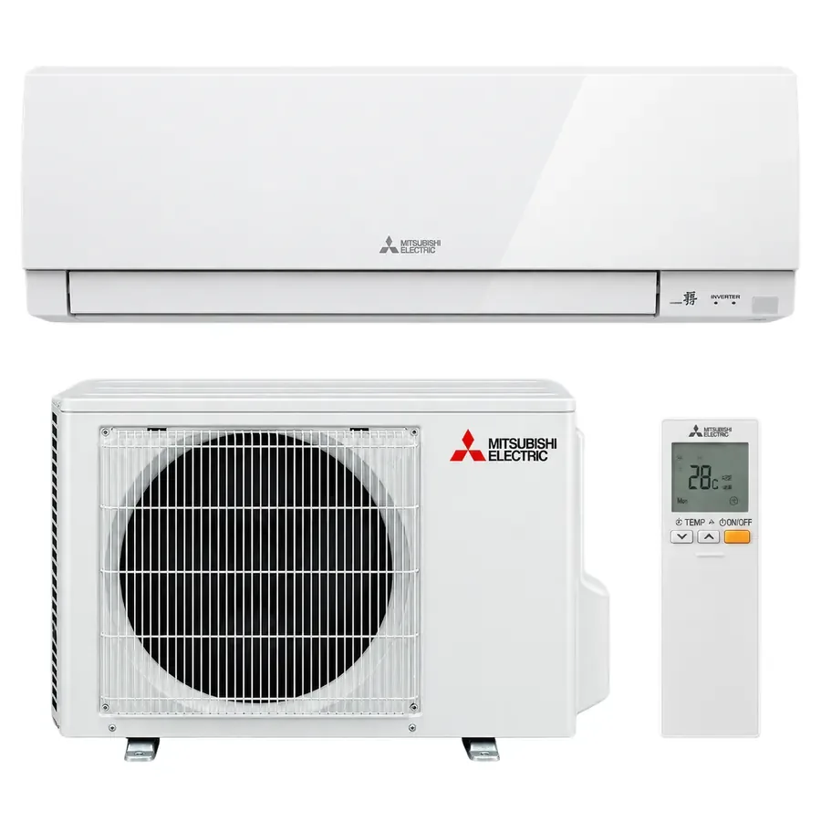

Mitsubishi MSZ-HR35 / MUZ-HR35 kaufen
Effiziente Split-Klimaanlage zum Kühlen und Heizen – ideal für mittelgroße Wohn- und Arbeitsbereiche, Schlafzimmer, Büros und Apartments.
- 3,5 kW Nennkühlleistung
- Energieeffizienzklasse A++ im Kühlbetrieb
- Modernes R32-Kältemittel
- Leiser, komfortabler Betrieb
- Fernbedienung inklusive

Für welche Räume eignet sich die MSZ-HR35?
Die Mitsubishi Electric MSZ-HR35 / MUZ-HR35 ist besonders für mittelgroße Räume geeignet. Als grobe Orientierung sind etwa 30 bis 40 m² realistisch. Die tatsächlich erforderliche Leistung hängt jedoch auch von Sonneneinstrahlung, Fensterflächen, Dämmung, Raumhöhe und Nutzung ab.
Für Schlafzimmer, Homeoffice, kleinere Wohnzimmer oder Apartments ist die HR35 eine attraktive Lösung. Bei hoher Wärmelast oder größeren Räumen kann die leistungsstärkere MSZ-HR35 / MUZ-HR35 sinnvoller sein.
Kühlen und Heizen mit einem System
Die Anlage kann im Sommer effizient kühlen und in der Übergangszeit zusätzlich zum Heizen genutzt werden. Durch die Inverter-Technologie wird die Leistung laufend an den tatsächlichen Bedarf angepasst.
Leiser Betrieb
Gerade in Schlaf- und Arbeitsräumen spielt die Geräuschentwicklung eine wichtige Rolle. Die HR-Serie ist auf einen komfortablen und zurückhaltenden Betrieb ausgelegt.
Fachgerechte Montage & Inbetriebnahme
Split-Klimaanlagen müssen fachgerecht installiert und in Betrieb genommen werden. Klima Claro übernimmt Beratung, Verkauf und Projektkoordination. Die Montage sowie die kältetechnische Inbetriebnahme erfolgen durch entsprechend qualifizierte Partnerbetriebe vor Ort.
Für eine möglichst genaue Einschätzung helfen Fotos vom geplanten Standort des Innen- und Außengeräts sowie vom vorgesehenen Leitungsweg.
MSZ-HR35 oder MSZ-HR35?
MSZ-HR35 / MUZ-HR35
ca. 3,5 kW
Geeignet für mittelgroße Räume und Anwendungen mit moderatem Kühlbedarf.
FAQ zur Mitsubishi MSZ-HR35
Kann die Mitsubishi MSZ-HR35 auch heizen?
Ja. Die Anlage verfügt neben dem Kühlbetrieb auch über einen Heizbetrieb und arbeitet dabei nach dem Wärmepumpenprinzip.
Für wie viele Quadratmeter ist die HR35 geeignet?
Als grobe Orientierung etwa 30 bis 40 m². Die passende Leistung hängt zusätzlich von Dämmung, Sonneneinstrahlung, Fensterflächen, Raumhöhe und Nutzung ab.
Welches Kältemittel verwendet die Anlage?
Die Mitsubishi MSZ-HR35 / MUZ-HR35 verwendet R32.
Ist eine Fernbedienung enthalten?
Ja, die passende Fernbedienung gehört zum Geräteset.
Wer führt die Installation aus?
Klima Claro übernimmt Beratung, Verkauf und Koordination. Montage und kältetechnische Inbetriebnahme erfolgen durch entsprechend qualifizierte Partnerbetriebe.
Mitsubishi Klimaanlage in München & Umgebung
Weitere Informationen zu Beratung, Montage und regionaler Verfügbarkeit finden Sie auf unseren Standort- und Markenseiten.
Mitsubishi MSZ-HR35 Preis & Montage anfragen
Schicken Sie uns Ihre Postleitzahl, Raumgröße und – wenn möglich – Fotos der geplanten Montagesituation. Wir prüfen die passende Lösung für Ihr Projekt.